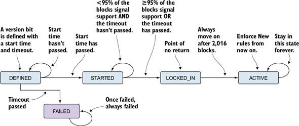
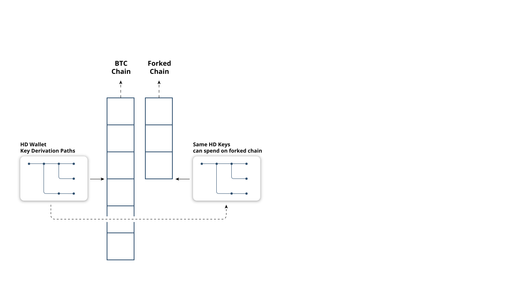
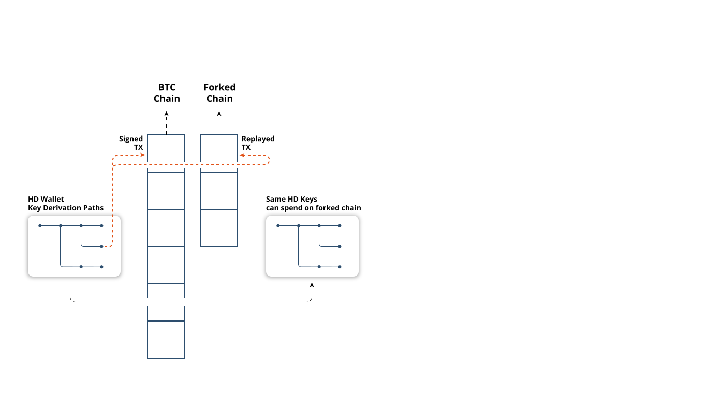
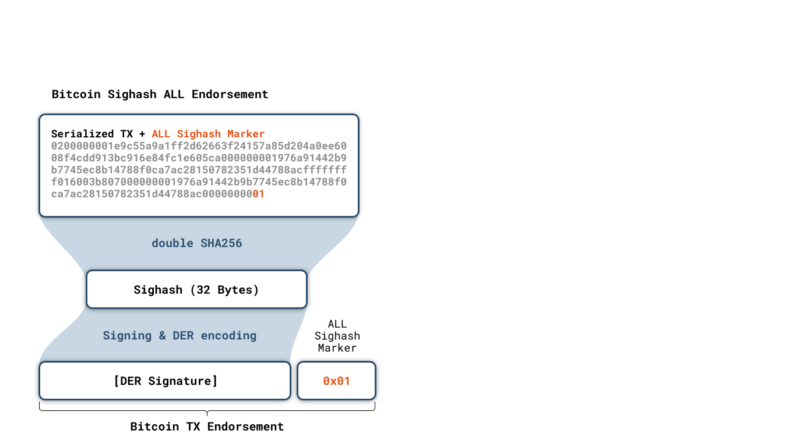
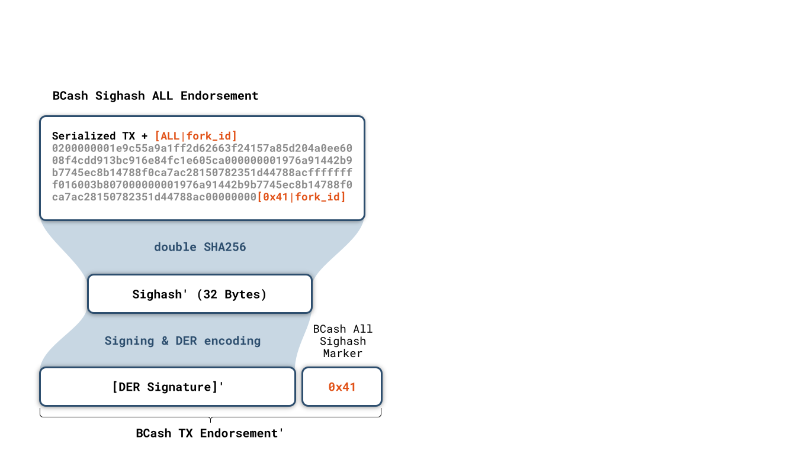

Chain reorganizations
- Nodes follow "heaviest" chain: Most accumulated proof-of-work
- Reorg: Node discovers a new heaviest chain that excludes some previous blocks: Orphans
- Small reorgs are a somewhat regular phenomenon: Distributed nature of mining
- Probability for large reorg should be small
- Whitepaper has some calculations on this
- Reorg is a messy process: Undo all old transactions, redo new ones
- Risk of double-spend
- The messiest txs: coinbases \(\Rightarrow\) 100 block maturity rule
Consensus & Chain Forks
- Not to be confused with software forks
- Soft forks
- Restricts the set of valid blocks
- Backwards-compatible: Old nodes will follow new chain
- Needs large miner support
- Criticisms: Technical debt, relaxed validation (Segwit softfork mechanism)
- Hard forks
- Enlarges the set of valid blocks
- Transaction and / or block validation rules
- Backwards-incompatible: Old nodes will reject transactions / blocks
- High danger of chain split
- Contentious tradeoffs
- Intuitively: Which one has more abuse potential?
- In Bitcoin: Extreme aversion to hard forks
- Other projects: Not so much
Softfork Activation
- "Needs large miner support". How do we measure it?
- BIP34 counted up the block version to signal readiness
- v3: Strict signature DER encoding
- v4: OP_CLTV
- :( one at a time, irrevocable (?), limited space
- BIP9 bit field interpretation of block version, 29 bits left
- activation is a state machine

Some Bitcoin forkology
- Accidental hardforks
- OP_VER removed in July 2010
- Every upgrade could have been an accidental hardork
- Luckily nobody ever used it
- August 2010 value overflow bug created 184.5 billioin bitcoins
- March 2013 accidental non-deterministic hardfork
- Migration from BerkeleyDB to LevelDB removed an unknown validation rule imposed by number of allowable concurrent DB locks
- Chainsplit of 24 blocks
- The early #YOLO days
- Six softforks, two hardforks in 2010 alone
- git commit; git push style
- Multiple bugfixes that would have allowed anyone to spend any coin
Chain Fork & TX Replays


- At fork height: Same UXTO set
- Wallet keys valid can sign on both chains
- Transaction replay across chains
- Signatures can be valid on both chains
- Hard forked chains have replay projection
- Requires modification of transaction signature algorithm
Replay Protection: Modified Sighash


- Signature hash is signed by private key
- Bcash modifies signature hash marker
- Sighash marker with forkID